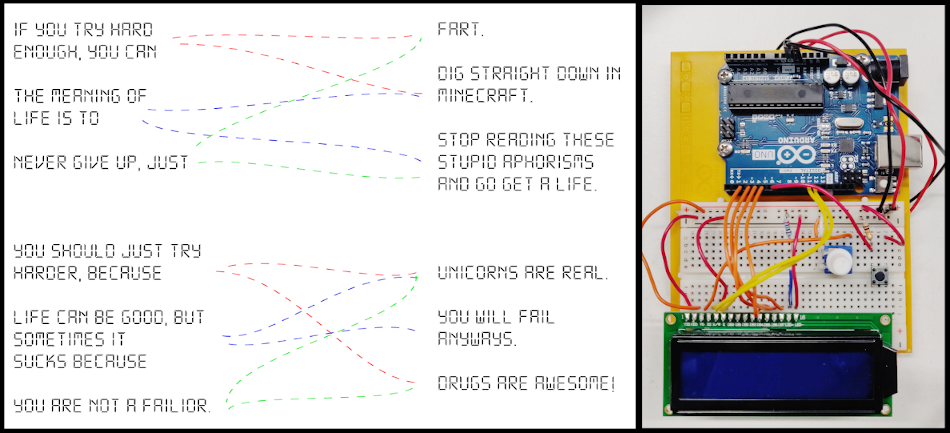

Olen todella kiinnostunut kaikenlaisista sulautetuista järjestelmistä, mutta tajusin kuitenkin, ettei minulla
ole oikeastaan minkäänlaista kokemusta niiden parissa työskentelemisestä. Päätin ryhtyä tuumasta toimeen ja
luokkatoverini lainasikin minulle Arduino Starter Kit-pakettiaan.
Opettelin perusteita pari päivää ja kun sain tarpeeksi varmuutta, uskalsin kokeilla hieman omanlaisen projektini toteuttamista näillä tarvikkeilla. Olen mustan huumorin suuri ystävä, joten aforismigeneraattori tuntui hauskalta idealta toteuttaa.
Ajatus koodista ja sen toimintalogiikasta oli selkeänä mielessäni, eikä sen kanssa tullut suuria vaikeuksia. Rakensin tämän projektin ohjeen pohjalta, jossa käytettiin "tilt switchiä" eli laitetta piti ravistaa sen aktivoimiseksi. Halusin vaihtaa siihen painettavan nappulan ja sen vaihtaminen olikin yllättävän helppoa. Suurin haaste oli saada led-näytön ylempi rivi pysymään paikoillaan "otsikkona" ja itse aforismi liikkumaan alemmalle riville. Aikani ongelman kanssa tapeltuani turvauduin Googlettamiseen ja sopiva ratkaisu löytyikin pian Arduinon keskustelufoorumilta.
Opettelin perusteita pari päivää ja kun sain tarpeeksi varmuutta, uskalsin kokeilla hieman omanlaisen projektini toteuttamista näillä tarvikkeilla. Olen mustan huumorin suuri ystävä, joten aforismigeneraattori tuntui hauskalta idealta toteuttaa.
Ajatus koodista ja sen toimintalogiikasta oli selkeänä mielessäni, eikä sen kanssa tullut suuria vaikeuksia. Rakensin tämän projektin ohjeen pohjalta, jossa käytettiin "tilt switchiä" eli laitetta piti ravistaa sen aktivoimiseksi. Halusin vaihtaa siihen painettavan nappulan ja sen vaihtaminen olikin yllättävän helppoa. Suurin haaste oli saada led-näytön ylempi rivi pysymään paikoillaan "otsikkona" ja itse aforismi liikkumaan alemmalle riville. Aikani ongelman kanssa tapeltuani turvauduin Googlettamiseen ja sopiva ratkaisu löytyikin pian Arduinon keskustelufoorumilta.

Ajatuksia projektista
Oli virkistävää opetella jotakin aivan uutta, vaikka sähköjohtojen kanssa puljaaminen tuntuikin aluksi hieman pelottavalta. Näin mielessäni kauhukuvat siitä, kuinka kytken Arduinon koneeseen ja se alkaa savuttamaan, iskemään kipinöitä ja koko talosta katkeaa sähköt. Ehkä pelkoni oli hieman liioiteltua, mutta ainakin se sai minut toimimaan kytkentöjen kanssa huolellisesti.
Kaiken kaikkiaan tämä parin päivän projekti oli todella hauska ja virkistävä kokemus. Sain rakentaa jotakin, joka ainakin toivottavasti saisi muutkin nauramaan. Sain myös ensimmäisen kosketukseni sulautettuihin järjestelmiin, jota kaipasin kipeästi.
Tässä muutama highlight projektista:
Oli virkistävää opetella jotakin aivan uutta, vaikka sähköjohtojen kanssa puljaaminen tuntuikin aluksi hieman pelottavalta. Näin mielessäni kauhukuvat siitä, kuinka kytken Arduinon koneeseen ja se alkaa savuttamaan, iskemään kipinöitä ja koko talosta katkeaa sähköt. Ehkä pelkoni oli hieman liioiteltua, mutta ainakin se sai minut toimimaan kytkentöjen kanssa huolellisesti.
Kaiken kaikkiaan tämä parin päivän projekti oli todella hauska ja virkistävä kokemus. Sain rakentaa jotakin, joka ainakin toivottavasti saisi muutkin nauramaan. Sain myös ensimmäisen kosketukseni sulautettuihin järjestelmiin, jota kaipasin kipeästi.
Tässä muutama highlight projektista:
- Ensimmäinen kokemukseni sulautetun järjestelmän parissa
- Oman huumorin esille tuominen oli hauska idea
- Keräsin varmuutta nopeasti ja uskalsin soveltaa omaa ajatustani arduinon koodiin
- Tilt switchin tavalliseen nappulaan vaihtaminen sujui helposti